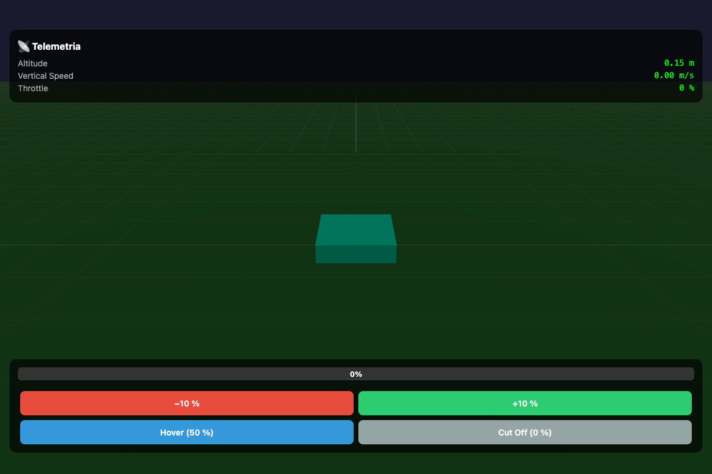
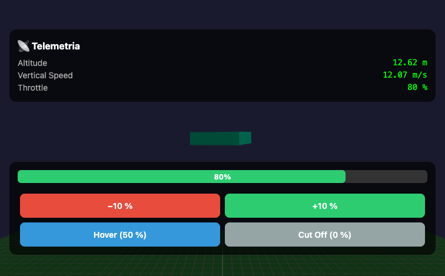
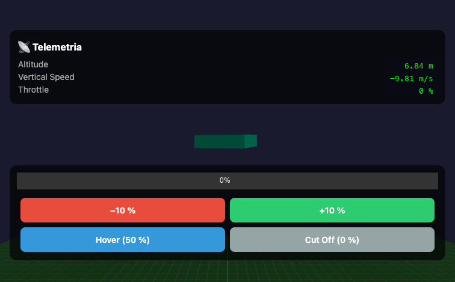

Scene.web.tsx dla przeglądarek oraz Scene.tsx z obsługą gl.endFrameEXP() dla urządzeń mobilnych.requestAnimationFrame niezależna od cyklu życia komponentów Reacta.Zamiast tradycyjnego stanu Reacta (powodującego kosztowne re-renderowanie całego drzewa komponentów przy każdej zmianie wysokości), zastosowano Zustand. Pętla fizyki aktualizuje telemetrię atomowo, a komponenty HUD subskrybują wyłącznie zmienione selektory wartości. Gwarantuje to stałe 60 klatek na sekundę bez dropów wydajności.
AmbientLight (0.7) dla widoczności otoczenia oraz DirectionalLight (1.2) zcieniami symulujące słońce.PlaneGeometry(1000, 1000) o realistycznym kolorze #2d572c.GridHelper(1000, 100) pozwalająca pilotowi na natychmiastową ocenę wysokości i prędkości.BoxGeometry(1.2, 0.3, 1.2) o proporcjach korpusu bezzałogowca.Równanie wypadkowego przyspieszenia pionowego:
$g = 9.81\text{ m/s}^2$, $T_{\max} = 19.62\text{ m/s}^2$. Dla $T = 0.5$ (Hover): $a_y = 0.00\text{ m/s}^2$.
Całkowanie numeryczne metodą Eulera:
Gdy dron dotyka ziemi ($y \le 0.15\text{ m}$), siła reakcji podłoża natychmiast równoważy grawitację: przyspieszenie i prędkość są zerowane, co eliminuje drgania i wpadanie pod podłoże. Zaimplementowano szybki rozbieg z limitem wznoszenia $15\text{ m/s}$, swobodne opadanie grawitacyjne oraz pułap maksymalny $500\text{ m}$.
pointerEvents="box-none" — przyciski są klikalne, nie blokując przy tym gestów i renderu sceny 3D.Altitude), prędkości pionowej (Vertical Speed) oraz poziomu ciągu (Throttle %).-10%, +10%, natychmiastowy zawis Hover (50%), odcięcie ciągu Cut Off (0%) oraz animowany Progress Bar.Płynna interpolacja pozycji kamery (LERP):
Ciągłe śledzenie punktu skupienia:
Kamera podąża 6 metrów za dronem i 3 metry powyżej, gwarantując stabilny kadr pozbawiony gwałtownych wstrząsów.
Wciśnięcie przycisku Hover (50%) aktywuje algorytm tłumienia prędkości resztkowej (wygaszanie do $0.00\text{ m/s}$), co pozwala natychmiast zatrzymać ruch pionowy i zablokować drona na żądanej wysokości w powietrzu.

0% — Silniki wyłączone, brak ciągu pionowego.0.15 m — Wysokość geometryczna środka bryły drona (o grubości 0.3 m). Wskaźnik HUD pokazuje idealne 0.00 m nad gruntem.0.00 m/s — Pełny spoczynek układu w układzie współrzędnych.
80% (lub 50%) — Ciąg przewyższający siłę grawitacji generuje dodatnie przyspieszenie $a_y = +5.89\text{ m/s}^2$.12.62 m — Płynny, stabilny wzrost wysokości lotu w czasie rzeczywistym.+12.07 m/s — Prędkość wznoszenia ograniczona regulatorem do bezpiecznego maksimum $15.0\text{ m/s}$.
0% (Cut Off) — Pełne odcięcie mocy silników. Lot wyłącznie pod wpływem grawitacji.6.84 m — Zniżanie w kierunku płyty lądowiska.-9.81 m/s — Ujemna prędkość pionowa odpowiadająca przyspieszeniu ziemskiemu $a_y = -9.81\text{ m/s}^2$..gltf / .glb) z wirującymi śmigłami.Danylo Mikhnytskyi (284125) • Maksym Mahaz (284115) • Grafika Komputerowa i GUI